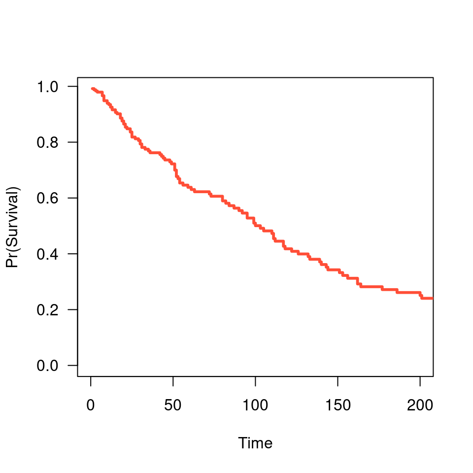
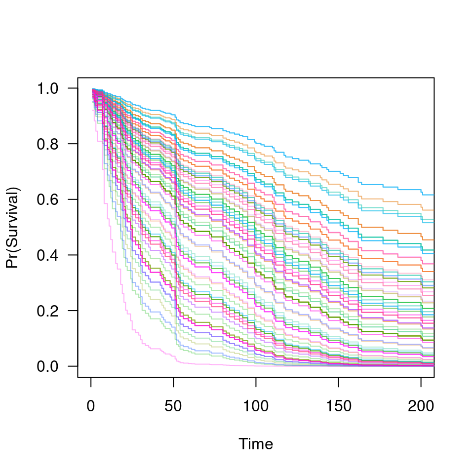

plot-ncvsurv-func.RdPlot survival curve for a model that has been fit using
ncvsurv followed by a prediction of the survival function using
predict.ncvsurv
# S3 method for ncvsurv.func plot(x, alpha=1, ...)
| x | A |
|---|---|
| alpha | Controls alpha-blending (i.e., transparency). Useful if many overlapping lines are present. |
| ... | Other graphical parameters to pass to |
Patrick Breheny
data(Lung) X <- Lung$X y <- Lung$y fit <- ncvsurv(X, y) # A single survival curve S <- predict(fit, X[1,], type='survival', lambda=.15) plot(S, xlim=c(0,200))
# Lots of survival curves S <- predict(fit, X, type='survival', lambda=.08) plot(S, xlim=c(0,200), alpha=0.3)